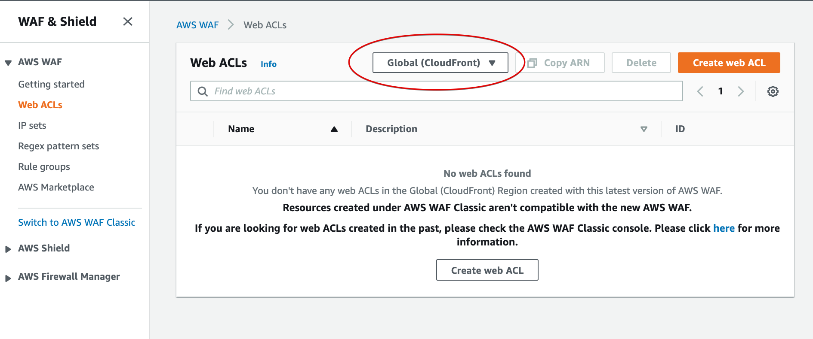

検索結果
検索結果がありません。
HOME
検索(基本)
メインメニュー「HOME」から、アンケートや申請などの帳票を通じて登録されたユーザのデータを検索し内容を確認することができます。
- 検索したい帳票をプルダウンから選択すると、対象となるデータの一覧が表示されます。

- 「検索条件」をクリックすると帳票に登録された項目の一覧が表示されます。
- データの絞り込みを行う場合、絞り込みたい項目を選択。「この条件で検索」をクリックします。
- 選択した条件にマッチするデータが表示されます。
検索(日付)
メインメニュー「HOME」から、アンケートや申請などの帳票を通じて登録されたユーザのデータを、登録・更新された期間をもとに抽出することができます。
- 検索したい帳票をプルダウンから選択すると、対象となるデータの一覧が表示されます。
- 「日付」をクリックすると、絞り込みを行う対象期間を指定できるフォームが表示されます。
- 絞り込みたい開始日と終了日を指定し、「この条件で検索」をクリックします。
- 指定した条件にマッチするデータが表示されます。
入力情報修正
アンケートや申請などの帳票を通じて登録されたユーザの、データ内容の修正やステータス（未対応・処理中・処理済み・完了）の設定・変更を行います。
- 修正したいデータを検索して表示します。対象となるデータが見つかったら、クリックします。
- データの内容が表示されます。必要な設定項目や入力内容を変更できます。
- データのステータスを設定・変更することができます。
- 「保存」をクリックすると、設定・変更した内容が更新されます。
CSV出力
アンケートや申請などの帳票を通じて登録されたユーザのデータを、CSV形式のデータとしてエクスポート（出力）します。
- 出力対象の帳票とデータを表示します。

- 出力する内容を絞り込む場合は「検索条件」や「日付」から抽出条件を指定し、「この条件で検索」をクリックしてデータを絞り込みます。
- 表示されたデータの最下部にある「CSV出力」をクリックし、データをダウンロードします。
- ダウンロードされたデータは、エクセルやテキストエディタなどのアプリケーションで閲覧や編集することができます。
セグメント配信
配信一覧の表示
配信の表示切替を説明します。
- 配信の状態を一覧で確認できます。
配信のステータス毎に表示対象を変更できます。test
- 「予約」を選択すると「一回のみ配信」が設定された配信を表示します。
- 「繰り返し予約」を選択すると繰り返し配信を設定した配信を表示します。
- 「下書き」を選択すると下書き状態の配信を表示します。
配信名、配信者、期間、種別を選択して配信対象を変更できます。
- 配信名をプルダウンメニューで選択できます。
- 配信者をプルダウメニューで選択できます。
- 配信期間を設定できます。
- 配信種別を選択できます。

配信ステータスを選択して配信対象を選択できます。
- 「ステータス」に応じた配信対象を表示できます。
今すぐ配信
手動で直ちに配信する方法を説明します。
- メニュー「セグメント配信」をクリックしてください。

- メニュー「配信一覧」＞「新規作成」の順でクリックしてください。

配信名、配信先、配信日時、配信内容を記入・選択してください。
- 配信先で「絞り込み」を選択した場合は帳票を選択し、配信対象を絞り込んでください。
- 配信日時で「今すぐ配信」を選択してください。
- 右下のプレビューボタンをクリックすることで送信プレビューを確認できます。
- 画面下部の「配信」をクリックすることにより直ちに配信されます。
1回のみ配信
手動で1回のみ配信する方法を説明します。
- メニュー「セグメント配信」をクリックしてください。

- メニュー「配信一覧」＞「新規作成」の順でクリックしてください。

配信名、配信先、配信日時、配信内容を記入・選択してください。
- 配信先で「絞り込み」を選択した場合は帳票を選択し、配信対象を絞り込んでください。
- 配信日時で「一回のみ配信」を選択し、「起点日時」を設定してください。
- 右下のプレビューボタンをクリックすることで送信プレビューを確認できます。
- 画面下部の「配信」をクリックすることにり配信設定されます。

繰り返し配信
繰り返し配信する方法を説明します。
- メニュー「セグメント配信」をクリックしてください。

- メニュー「配信一覧」＞「新規作成」の順でクリックしてください。
配信名、配信先、配信日時、配信内容を記入・選択してください。
- 配信先で「絞り込み」を選択した場合は帳票を選択し、配信対象を絞り込んでください。
- 配信日時の一番下を選択し、「開始日、終了日、時間、期間」を設定してください。
- 右下のプレビューボタンをクリックすることで送信プレビューを確認できます。
- 画面下部の「配信」をクリックすることにより配信設定されます。

手動配信(複写)
配信内容を複写する方法を説明します。
- 複写したい配信内容を配信一覧から検索してください。

- 複写したい配信内容の「配信ID」クリックしてください。
「複写して新規作成」をクリックしてください。

- 配信内容設定後、画面下部の「配信」をクリックすることにより配信設定されます。

外部配信設定一覧の表示
外部配信設定の表示切替を説明します。
- 「セグメント配信」を選択してください。
- 「外部配信設定」選択してください。
配信名、帳票を選択して外部配信設定対象を変更できます。
配信名をプルダウンメニューで選択できます。
帳票をプルダウンメニューで選択できます。
外部配信設定ステータスを選択して外部配信設定対象を選択できます。
「ステータス」に応じた外部配信設定対象を表示できます。
外部配信設定(新規作成)
外部配信設定の新規作成する方法を説明します。
- 「セグメント配信」＞「外部配信設定」＞「新規作成」の順でクリックしてください。
- 「配信名」、「帳票」、「有効」を選択・記入してください。
- 「帳票」はプルダウン形式で選択できます。
- 「配信条件」を設定してください。
- プルダウン形式で選択できます。
- 「保存」をクリックしていただけると外部配信設定が新規作成されます。
受信設定画面作成
受信設定画面を作成する方法を説明します。
- 「セグメント配信」＞「受信設定画面作成」の順でクリックしてください。
- 赤い囲いの部分をクリックすると質問が追加できます。
- 下記アイコンから、質問の削除・コピーができます。
- タイトル、質問形式、質問内容を記入してください。
- 質問形式はプルダウン形式で選択できます。
- 右側のプレビューで携帯画面イメージを確認できます。
- 「帳票登録」をクリックしていただけると受信設定画面が設定されます。
外部配信設定(抽出条件)
外部配信設定の抽出条件を設定する方法を説明します。
- 「セグメント配信」＞「外部配信設定」の順でクリックし、抽出条件を設定したい帳票を選択し「設定」をクリックしてください。

- 「抽出条件」をクリックしてください。
- 「サブジェクト抽出条件」、「本文抽出条件」を記入してください。
- 「テスト」に記入後、「チェック」をクリックしていただけると抽出できているかチェックができます。
- 「保存」をクリックしていただけると抽出条件が設定されます。
外部配信設定(本文変更条件)
外部配信設定の本文変更条件を設定する方法を説明します。
- 「セグメント配信」＞「外部配信設定」の順でクリックし、本文変更条件を設定したい帳票を選択し「設定」をクリックしてください。
- 「本文変更条件」をクリックしてください。
- 「本文変更条件」に正規表現を記入してください。
- 例として下5行を消す正規表現を記入しています。
- 「テスト」に記入後、「変更」をクリックしていただけると本文が変更できているかチェックができます。
- 「保存」をクリックしていただけると本文変更条件が設定されます。
帳票作成
帳票一覧
作成した帳票一覧を見る方法を説明します。
- 「帳票作成」をクリックすると、作成した帳票の数が分かります。またフィルタ検索や並び替えで帳票を検索することが可能です。
新しい帳票を作成
入力フォームの新規作成について記します。
- 「帳票作成」＞「新しいフォームの作成」＞「空白」をクリックすると、空の入力フォームを生成します。
- 記入項目を埋めていきます。
アンケートのタイトルとアンケートの説明を記入します。
質問内容を記入します。
記述式、ラジオボタン、チェックボックス、プルダウンの選択が可能です。
「質問を追加」で質問を追加することができます。
「プレビュー」をクリックすると携帯画面でのイメージを確認することができます。
新しい帳票を作成(配信設定)
配信設定やご連絡フォームなどテンプレートを用意しています。サンプルで入力されている内容を編集して利用が可能です。
- 「帳票作成」＞「配信設定」の順にクリックすると、メールマガジン配信設定が可能になります。
- 情報区分を編集できます。
- 地区選択・年代・性別を編集できます。
- 最後に帳票登録をクリックします。
新しい帳票を作成(ご連絡フォーム)
テンプレートを利用したご連絡フォームの作成について説明します。
- 「帳票作成」＞「ご連絡フォーム」の順にクリックすると、ご連絡フォームのテンプレートが表示されます。
- タイトル・説明文を編集することができます。
- 記述式・ラジオボタン・チェックボックスなど選択できます。
- 名(ファーストネーム)・名前・メールアドレス・電話・メッセージをテンプレートとしてご用意しています。
- それぞれ内容の編集・削除が可能です。
- 必須項目への設定が可能です。
- 「プレビュー」をクリックすると、携帯画面のイメージを見ることができます。
新しい帳票を作成(調査)
テンプレートを利用した調査フォームの作成について説明します。
- 「帳票作成」＞「調査」の順にクリックすると、調査フォームのテンプレートが表示されます。
- タイトル・内容の編集ができます。
- 記述式・ラジオボタン・チェックボックスなど選択できます。
3.「居住形態」をクリックすると内容の編集が可能です。
- タイトルの編集ができます。
- 選択肢の追加が可能です。
- 選択肢の削除が可能です。
4.「ご意見・ご要望」をクリックすると内容の編集が可能です。
- タイトルの編集が可能です。
- 説明文の編集が可能です。
- 最後にページ上の「帳票登録」をクリックします。
編集
作成したアンケートの編集方法、使用済みアンケートの処理方法について説明します。
- 「帳票作成」をクリックし、編集したいアンケートを選択します。
- 帳票編集モードになっていますので、内容を編集し最後に「帳票更新」をクリックします。
- 使わなくなった帳票は、各アンケートの一番右にある点をクリックし「無効にする」を選択します。
LIFF・webを開く
LIFF・webを開く方法を説明します。
- 「帳票作成」から、各アンケートの一番右にある点をクリックし「LIFF・WEBを開く」を選択します。
- LINEのログイン画面にうつるのでログインします。 ※2回目以降はログインの必要はありません。
- Web上でLIFFの画面を確認することができます。
シナリオ設定
TOP画面
メインメニュー「シナリオ設定」をクリックし、本番、ボックスのシナリオを設定します。 ※実際のシナリオや画面を作成するには、別ツール「LINE Bot Designer」で作成します。
- 本番環境のシナリオ設定箇所になります。
有効バージョン：現在の有効バージョン情報が表示されます。
バージョン：プルダウンから反映したバージョンを選択します。
有効にする：バージョン変更後、クリックすると選択したバージョンが有効になります。
全体構成：クリックすると、シナリオ全体構成が表示されます。詳細は「3.」を参照ください。
エクスポート(LBD形式)：クリックするとシナリオデータ(LBDファイル)をダウンロードします。
- サンドボックスは、テスト環境のシナリオ設定箇所になります。テスト環境でシナリオデータをインポートして、動作確認をした後に本番環境で有効にします。
有効バージョン：現在の有効バージョン情報が表示されます。
バージョン：プルダウンから反映したバージョンを選択します。
有効にする：バージョン変更後、クリックすると選択したバージョンが有効になります。
全体構成：クリックすると、シナリオ全体構成が表示されます。詳細は「3.」を参照ください。
エクスポート(LBD形式)：クリックするとシナリオデータ(LBDファイル)をダウンロードします。
編集：クリックすると編集画面が開きます。詳細は別途、編集の章を参照ください。
インポート：クリックするとインポート画面が表示されます。詳細は「4.」を参照ください。
削除：選択されているシナリオデータを削除します。
- 「全体構成」をクリックすると全体構成の画面が表示されます。
「✕」ボタンで画面を閉じます。
- 「インポート」をクリックするとインポート画面が表示されます。
クリップボタン：でインポートしたいシナリオデータ(LBDファイル)を選択します。
シナリオ：選択したシナリオデータのシナリオ名が表示されます。
バージョン：選択したシナリオのバージョン情報が表示されます。
有効にする：有効にする場合はチェックを付けます。
OKボタン：シナリオデータがインポートされます。
キャンセルボタン：インポート処理をキャンセルして閉じます。
編集(ゴミ分別)
TOP画面から「編集」をクリックすると編集画面が表示されます。 ここでは、ゴミ分別の編集について記載します。 ゴミ分別は基本CSVデータで管理をしてインポートにより本システムへ投入します。
「トーク名」のプルダウンから「ゴミ分別」を選択します。

「クリップマーク」をクリックし、CSVインポートデータを指定して、「OK」をクリックしてデータをインポートします。 「キャンセル」をクリックすると処理は中断して画面が閉じます。
「属性編集」をクリックすると編集することができます。 編集することは可能ですが、内部ID（メッセージID）で管理しているため、実際はCSVデータで管理することをお勧めします。 ※CSVデータで管理する場合はこちらの編集は不要です。
編集(ゴミ出し)
TOP画面から「編集」をクリックすると編集画面が表示されます。 ここでは、ゴミ出しの編集について記載します。 ゴミ出しは基本LINE Bot Designer(LBD形式)で作成します。
「トーク名」のプルダウンから「ゴミ出し」を選択します。
- 「属性編集」をクリックと編集することができます。「保存」をクリックすると設定が保存されます。 「キャンセル」をクリックすると処理は中断して閉じます。 各設定項目について、下記に記載します。
メッセージID：各メッセージ単位の内部IDです。
プレビュー：設定した内容がプレビューで表示されます。
名前：メッセージ名を設定します。
画像タイプ：画像あり/なしを設定します。
タイトル：タイトル名を設定します。
テキスト：本文を設定します。
アクション数：アクションの数を設定します。
アクション１，２、、：アクション数で決めた分アクション設定が可能です。
タイプ：メッセージアクション、URIアクション、ポストバックアクション、日時ピッカーアクションを選択します。
メッセージアクション(ラベル)：LINEで表示するラベル名を設定します。
メッセージアクション(テキスト)：次のアクションのテキスト名を設定します。
URIアクション(ラベル)：LINEで表示するラベル名を設定します。
URIアクション(URL)：選択したときの遷移先のURLを設定します。
ポストバックアクション(ラベル)：LINEで表示するラベル名を設定します。
ポストバックアクション(テキスト)：LINEで回答するテキスト名を設定します。
ポストバックアクション(データ)：次のアクションするデータを設定します。
日時ピッカーアクション：現バージョンでは利用できない機能となります。
編集(損害報告)
TOP画面から「編集」をクリックすると編集画面が表示されます。 ここでは、損害報告の編集について記載します。 損害報告のシナリオは固定テンプレートのためシナリオを変更することはできません。
「トーク名」のプルダウンから「損害報告」を選択します。
「属性編集」をクリックすると編集することができます。 タイトル、テキスト、ラベルのみ変更してください。
編集(関連情報)
TOP画面から「編集」をクリックすると編集画面が表示されます。 ここでは、関連情報の編集について記載します。 関連情報は基本LINE Bot Designer(LBD形式)で作成します。
「トーク名」のプルダウンから「関連情報」を選択します。
- 「属性編集」をクリックと編集することができます。「保存」をクリックすると設定が保存されます。 「キャンセル」をクリックすると処理は中断して閉じます。 各設定項目について、下記に記載します。
メッセージID：各メッセージ単位の内部IDです。
プレビュー：設定した内容がプレビューで表示されます。
名前：メッセージ名を設定します。
タイトル：タイトル名を設定します。
テキスト：本文を設定します。
列の数：カルーセルの数を指定します。
アクション数：アクションの数を設定します。
サムネイルの画像を使用する：「はい」を選択すると各カラム毎にサムネイル画像を付けます。画像を使用する場合は、全て画像を指定する必要があります。
アクション１，２、、：アクション数で決めた分アクション設定が可能です。
タイプ：メッセージアクション、URIアクション、ポストバックアクション、日時ピッカーアクションを選択します。
メッセージアクション(ラベル)：LINEで表示するラベル名を設定します。
メッセージアクション(テキスト)：次のアクションのテキスト名を設定します。
URIアクション(ラベル)：LINEで表示するラベル名を設定します。
URIアクション(URL)：選択したときの遷移先のURLを設定します。
ポストバックアクション(ラベル)：LINEで表示するラベル名を設定します。
ポストバックアクション(テキスト)：LINEで回答するテキスト名を設定します。
ポストバックアクション(データ)：次のアクションするデータを設定します。
日時ピッカーアクション：現バージョンでは利用できない機能となります。
編集(リンク集)
TOP画面から「編集」をクリックすると編集画面が表示されます。 ここでは、リンク集の編集について記載します。 リンク集は基本LINE Bot Designer(LBD形式)で作成します。
「トーク名」のプルダウンから「リンク集」を選択します。
- 「属性編集」をクリックと編集することができます。「保存」をクリックすると設定が保存されます。 「キャンセル」をクリックすると処理は中断して閉じます。 各設定項目について、下記に記載します。
メッセージID：各メッセージ単位の内部IDです。
名前：メッセージ名を設定します。
プレビュー：設定した内容がプレビューで表示されます。
列の数：カルーセルの数を指定します。
アクション数：アクションの数を設定します。
サムネイルの画像を使用する：「はい」を選択すると各カラム毎にサムネイル画像を付けます。画像を使用する場合は、全て画像を指定する必要があります。
タイトルを使用する：「はい」を選択すると、タイトルの設定が可能になります。
カラム１，２、、：列の数で決めた分のカルーセルの設定が可能になります。
アクション１，２、、：アクション数で決めた分アクション設定が可能になります。
タイトル：タイトル名を設定します。
テキスト：本文を設定します。
タイプ：メッセージアクション、URIアクション、ポストバックアクション、日時ピッカーアクションを選択します。
メッセージアクション(ラベル)：LINEで表示するラベル名を設定します。
メッセージアクション(テキスト)：次のアクションのテキスト名を設定します。
URIアクション(ラベル)：LINEで表示するラベル名を設定します。
URIアクション(URL)：選択したときの遷移先のURLを設定します。
ポストバックアクション(ラベル)：LINEで表示するラベル名を設定します。
ポストバックアクション(テキスト)：LINEで回答するテキスト名を設定します。
ポストバックアクション(データ)：次のアクションするデータを設定します。
日時ピッカーアクション：現バージョンでは利用できない機能となります。
編集(ハザードマップ)
TOP画面から「編集」をクリックすると編集画面が表示されます。 ここでは、リンク集の編集について記載します。 ハザードマップは基本LINE Bot Designer(LBD形式)で作成します。
「トーク名」のプルダウンから「ハザードマップ」を選択します。

- 「属性編集」をクリックと編集することができます。「保存」をクリックすると設定が保存されます。 「キャンセル」をクリックすると処理は中断して閉じます。 各設定項目について、下記に記載します。
メッセージID：各メッセージ単位の内部IDです。
名前：メッセージ名を設定します。
プレビュー：設定した内容がプレビューで表示されます。
列の数：カルーセルの数を指定します。
アクション数：アクションの数を設定します。
サムネイルの画像を使用する：「はい」を選択すると各カラム毎にサムネイル画像を付けます。画像を使用する場合は、全て画像を指定する必要があります。
タイトルを使用する：「はい」を選択すると、タイトルの設定が可能になります。
カラム１，２、、：列の数で決めた分のカルーセルの設定が可能になります。
アクション１，２、、：アクション数で決めた分アクション設定が可能になります。
タイトル：タイトル名を設定します。
テキスト：本文を設定します。
タイプ：メッセージアクション、URIアクション、ポストバックアクション、日時ピッカーアクションを選択します。
メッセージアクション(ラベル)：LINEで表示するラベル名を設定します。
メッセージアクション(テキスト)：次のアクションのテキスト名を設定します。
URIアクション(ラベル)：LINEで表示するラベル名を設定します。
URIアクション(URL)：選択したときの遷移先のURLを設定します。
ポストバックアクション(ラベル)：LINEで表示するラベル名を設定します。
ポストバックアクション(テキスト)：LINEで回答するテキスト名を設定します。
ポストバックアクション(データ)：次のアクションするデータを設定します。
日時ピッカーアクション：現バージョンでは利用できない機能となります。
編集(トークを利用する)
TOP画面から「編集」をクリックすると編集画面が表示されます。 ここでは、特別なシナリオトークの利用方法について記載します。 特別なシナリオには損害報告、ゴミ分別があり基本的なシナリオは決まっています。
- 「トークを利用する」をクリックすると、特別なシナリオトークの利用画面が表示されます。有効になっているシナリオにはチェックマークが付きます。
損害報告
- 作成：クリックすると損害報告シナリオが作成されます。
- 無効にする：クリックすると損害報告シナリオが無効になります。
- 削除：クリックすると損害報告シナリオが削除されます。
ゴミ分別
- 作成：クリックするとゴミ分別シナリオが作成されます。
- 削除：クリックするとゴミ分別シナリオが削除されます。
キャンセル：クリックすると特別なシナリオトークの利用画面が閉じます。
編集(複合メッセージを追加)
TOP画面から「編集」をクリックすると編集画面が表示されます。 ここでは、複合メッセージを追加の利用方法について記載します。 各トーク名にあるデータを複合して表示することができます。
- 「複合メッセージを追加」をクリックすると、複合メッセージ画面が表示されます。 メッセージは最大5つまで選択することが可能です。
名前：複合メッセージ名を入力します。
トーク名：プルダウンから選択するトーク名でメッセージを絞り込んで表示します。
各メッセージ：メッセージ一覧が表示されます。これから利用するメッセージを選択します。（最大5つまで選択可能）
追加：クリックすると設定した複合メッセージが追加されます。
キャンセル：処理を中断して、複合メッセージ画面が閉じます。
ログ
LINE友だち数情報
メインメニュー「ログ」から「友だち数」をクリックすると、LINE友だちの人数情報を確認できます。
- 「友だち数」から「日次」を選択後、「開始日」を指定して「表示」をクリックするを日単位で友だち数のグラフが表示されます。
- 「週次」を選択後、「開始日」を指定して「表示」をクリックするを週単位で友だち数のグラフが表示されます。
- 「週次」を選択後、「開始月」を指定して「表示」をクリックするを月単位で友だち数のグラフが表示されます。
LINE友だち属性1
メインメニュー「ログ」から「友だちの属性」をクリックすると、LINEの友だちの属性情報を確認できます。
- 「年齢」をクリックすると年齢別（5歳単位）のグラフが表示されます。
- 「性別」をクリックすると性別のグラフが表示されます。
- 「エリア」をクリックするとエリア別のグラフが表示されます。
- 「OS」をクリックするとOS別のグラフが表示されます。
LINE友だち属性2
メインメニュー「ログ」から「友だちの属性」をクリックすると、LINEの友だちの属性情報を確認できます。
- 「友だち期間」をクリックすると友だち登録している期間別のグラフが表示されます。
リッチメニュー
メインメニュー「統計」から「帳票」をクリックすると、リッチメニューの操作に関する集計情報が確認できます。
1.「リッチメニュー操作数」から「日次」を選択後、開始日を指定して「表示」をクリックすると、日単位でのリッチメニューのタップされた合計数の推移グラフが表示されます。
- 「週次」や「月次」を選択すると、グラフの集計単位を変更することができます。
3.「リッチメニューの各ボタンタップ割合」をクリックすると、リッチメニューがタップされた割合（パーセンテージ）の円グラフが表示されます。
4.集計の開始日と終了日を指定して、集計期間を変更することができます。 
セグメント
メインメニュー「統計」から「帳票」をクリックしセグメントの項目を表示すると、帳票で登録されたセグメントに関する集計情報が確認できます。
1.「セグメント別登録者数」をクリックすると、帳票で登録されたセグメントの登録者数が、帳票ごとの積み上げグラフとして表示されます。
- 集計の単位を「日次」「週次」「月次」で変更できます。
- 単位にあわせて集計の期間を変更できます。
2.「セグメント別配信数」をクリックすると、セグメント配信の行われた配信数が、帳票ごとの積み上げグラフとして表示されます。
- 集計の単位を「日次」「週次」「月次」で変更できます。
- 単位にあわせて集計の期間を変更できます。
3.「セグメント成功配信数」をクリックすると、セグメント配信の行われた配信数のうち配信に成功した数が、帳票ごとの積み上げグラフとして表示されます。
- 集計の単位を「日次」「週次」「月次」で変更できます。
- 単位にあわせて集計の期間を変更できます。
帳票・LIFF
メインメニュー「統計」から「帳票」をクリックしLIFFの項目を表示すると、帳票の表示数の集計情報が確認できます。
1.「LIFF別起動数」をクリックすると、アンケートや申請などの帳票の表示数が帳票別に表示されます。開始日と終了日を指定して、集計期間を変更できます。
2.対象となる帳票のグラフをクリックすると、帳票内で選択された内訳が表示されます。
システム設定
ロゴ画像
管理画面のロゴ画像の登録方法を記載します。
- 「システム設定」から「一般設定」をクリックします。
- ロゴ画像の画像箇所にマウスを移動します。
- 「ロゴ画像を選択」をクリックし画像を指定した後、縦サイズ、横サイズを指定します。
- 「保存」をクリックすると、管理画面に指定したロゴ画像が表示されます。
メニュースタイル
管理画面のメニュースタイルの設定方法を記載します。
- 「システム設定」から「一般設定」をクリックします。
- メニュースタイルの「横並び」をクリックし、「保存」をクリックするとメニューが横に並びます。
- メニュースタイルの「縦並び」をクリックし、「保存」をクリックするとメニューが縦に並びます。
テナント名
管理画面のテナント名の設定方法を記載します。
- 「システム設定」から「一般設定」をクリックします。
- テナント名を入力し、「保存」をクリックします。
- 入力したテナント名が表示されます。
テーマカラー
管理画面の配色の設定方法を記載します。
「システム設定」から「一般設定」をクリックします。「テーマカラー」項目でメニュー画面の配色を変更できます。
カラーコードの指定、またはカラーピッカーから配色を指定できます。主な変更項目は以下です。
- 「一次色」：ヘッダーのメニューや設定ボタン、文字色などメインとなるカラーを指定
- 「ヘッダーの背景色」「コンテンツの背景色」「フッターの背景色」：ページの背景色を指定

LINE設定
LINE Developers で開設した Messaging API との連携設定の方法を記載します。
「システム設定」から「LINE設定」をクリックします。
Messaging API の各種情報を登録します。本番とサンドボックスそれぞれに登録します。
- 「チャネルアクセストークン」：チャネル基本設定にある、チャネルアクセストークン情報を登録
- 「チャネルID」：Massaging API設定にある、チャネルID情報を登録
- 「チャネルシークレット」：チャネル基本設定にある、チャネルシークレット情報を登録
メール設定
ユーザー作成時に送信する招待メールの編集方法を記載します。
「システム設定」から「メール設定」をクリックします。
招待メールで送信される、ユーザー名と一時パスワードを通知する文面内容を編集します。初期値（英語）が設定されています。「保存」をクリックすると変更内容が確定されます。
- 「招待メールの件名」「招待メールのメッセージ」：送信される招待メールの件名（Subject）と本文（body）を変更します。
- 「{username}」：あらかじめ設定されたユーザーネームが挿入される領域です。
- 「{####}」：あらかじめ設定されたパスワードが挿入される領域です。
ユーザ設定
一覧とポリシー設定
登録されているユーザーやグループの一覧の確認ができます。
- ユーザ一覧
メインメニュー「ユーザ設定」をクリックします。
ユーザをクリックすると、ユーザ一覧が表示され登録されているユーザ情報が一覧で表示されます。
- グループ一覧
- メインメニュー「ユーザ設定」をクリックします。
- グループをクリックするとグループ一覧が表示されます。
- ポリシー設定
ポリシー設定をクリックします。
パスワードの最小長が設定できます。
パスワードの強度をチェックボックスで設定できます。（複数選択可）
一時パスワードの有効期限が設定できます。（日数）
保存ボタンをクリックすると、設定した内容が保存されます。
ユーザ新規作成
ユーザの作成方法を記載します。
メインメニュー「ユーザ設定」から「新規作成」をクリックします。
- ユーザを新規作成します。
ユーザ名を入力します。
一時パスワードを入力します。
メールアドレスを入力します。（こちらのアドレスに招待メールが届きます）
グループを選択します。
招待メールを送る場合は、「はい」を選択します。
ユーザ情報変更 (パスワード・権限)
ユーザー情報を変更したい場合は、下記手順で変更が可能です。
- 「ユーザ情報」をクリックし、変更したいユーザー名を選択します。
- 「パスワードリセット」を選択するとパスワードの変更ができます。
- 「グループに追加する」を選択すると、ユーザーをどのグループに追加するか選ぶことができます。
ユーザ削除
ユーザー情報を削除する際の手順を記載します。
- 「ユーザ設定」をクリックした後、 削除したいユーザーを選択します。
- 削除したいユーザーの詳細情報が表示されるので、画面右上の「ユーザ削除」をクリックします。
グループ編集
adminsとmembersでグループ編集をすることが可能です。必要な権限範囲に応じてグループを使い分けることがきます。adminsはすべての機能に、membersはHOME・セグメント配信・帳票作成・ログ機能に対して権限があります。
- 「ユーザ設定」＞「グループ」をクリックします。
- 編集したいグループを選びます。
- 「ユーザを追加する」をクリックします。
- 追加したいユーザーをクリックします。
AWS設定
DNS_DOMAIN_LIFF_CERTIFICATE_ID の設定
Amazon Certificate Manager(以下、ACM)を使って証明書を発酵する方法です。
- システム設定 から “DNS_DOMAIN” の値を確認します。
- 未設定の場合は開発者向け情報から設定します。
- リージョンを バージニア州北部 を選択した上でACMを開き「証明書のリクエスト」をクリックします。

- 「パブリック証明書のリクエスト」を選択し、証明書をリクエストし、ドメイン名を設定します。
- *.(環境名).(DNS_DOMAINで設定した値) を設定します。

- *.(環境名).(DNS_DOMAINで設定した値) を設定します。
- 検証方法の選択を選択(必要に応じてタグを追加)、「確認とリクエスト」をクリックします。
- 検証後に発行される証明書の識別子を DNS_DOMAIN_LIFF_CERTIFICATE_ID として設定します。

- 検証後に発行される証明書の識別子を DNS_DOMAIN_LIFF_CERTIFICATE_ID として設定します。
DNS_DOMAIN_LIFF_HOSTED_ZONE_ID の設定
- システム設定 から DNS_DOMAIN の値を確認します。
- 未設定の場合は開発者向け情報から設定してください。
- AWSコンソールから「Amazon Route53」> 「ホストゾーンの作成」を開きます。
- ドメイン名として(環境名).(DNS_DOMAINで設定したドメイン名)を設定します。
- 作成されたホストゾーンIDを管理画面の DNS_DOMAIN_LIFF_HOSTED_ZONE_ID として設定します。
Cognitoユーザプール(LIFF)の確認
AWS Cognitoで管理される管理画面のユーザについて記します。
- 「ユーザープールの管理」＞
(環境名)-liff-usersが記されたユーザープールを選択します。
- 「IDプロバイダー」>「OpenID Connect」をクリックし、さらに最下部に表示される「プロバイダー Line」の編集のマークをクリックします。
- クライアントIDにLINEログインのチャネルID、クライアントシークレットにLINEログインのチャネルシークレットが設定されていることを確認できます。
- アプリクライアントの設定で以下設定を確認します。
- 有効なIDプロバイダが Line となっていること
- コールバックURLが
https://LIFFのドメイン/loginになっていること - サインアウトURLが
https://LIFFのドメインになっていること
Cognitoユーザプール(管理画面)
AWS Cognitoで管理される管理画面のユーザについて記します。
- ユーザープールの管理を選択します。
- 環境名が記されたユーザープールを選択します。
- 環境構築時および管理画面で作成されたユーザ・グループを確認できます。
- パスワードポリシーの変更ができます。
- 変更される場合の最小長は8文字以上としてください。
- 管理画面上には設定変更後のパスワードポリシーは表示されません。
IP アドレス制限
AWS WAF の設定により IP アドレス制限ができます。
アクセス対象とする IP アドレスを IP address に入力します。
- Region として Global(CloudFront)を選択します。
- IPv4 または IPv6 の選択はアクセス対象とする環境により異なります。
- Web ACLs をクリックします。
- 「Global(CloudFront)」が選択されていることを確認します。
- 「Create web ACL」をクリックします。 
プルダウンメニューから Add my own rules and rule groups を選択します。
- 条件にマッチしない場合に許可させないため「Block」をクリックします。
- Rule type から IP set を選択します。
セグメント配信の受信メールアドレス設定
環境構築のコマンド実施後に Amazon SES （以下、「SES」）、Amazon SNS （以下、「SNS」）の設定を実施してください。
- リージョンとして us-west-2(オレゴン)を選択します。

- セグメント配信の受信に使用するメールアドレスを SES 設定します。

- SES と連携する SNS を開き、SNS トピック設定がなされていることを確認してください。